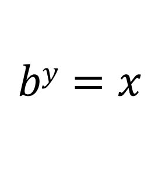
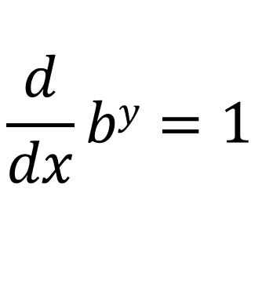
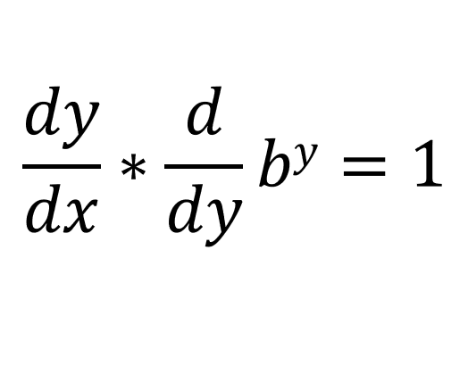
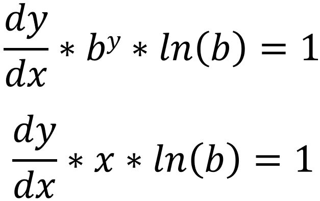
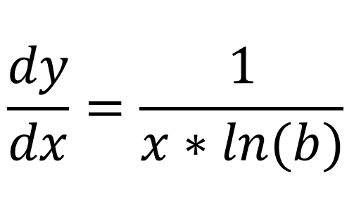

Lets say [y = logbx], which means:
Now lets differentiate both sides with respect to x:
Instead of doing [[d/dx](by)], we can do this [[dy/dx] * [d/dy](by)]:
You should already know that [[d/dy](by) = (by * ln(b))] (if you don't, then click here):
We can write this as:
And that completes our proof.